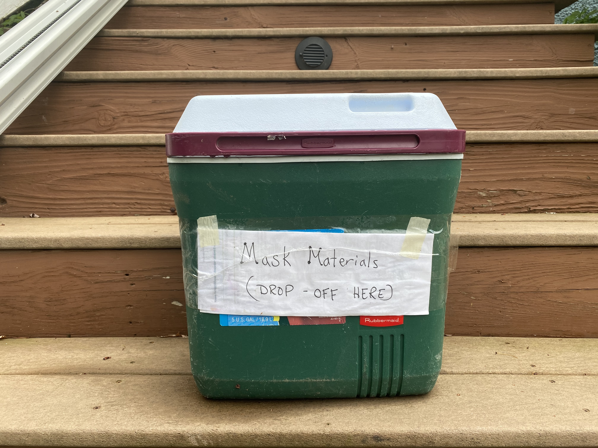
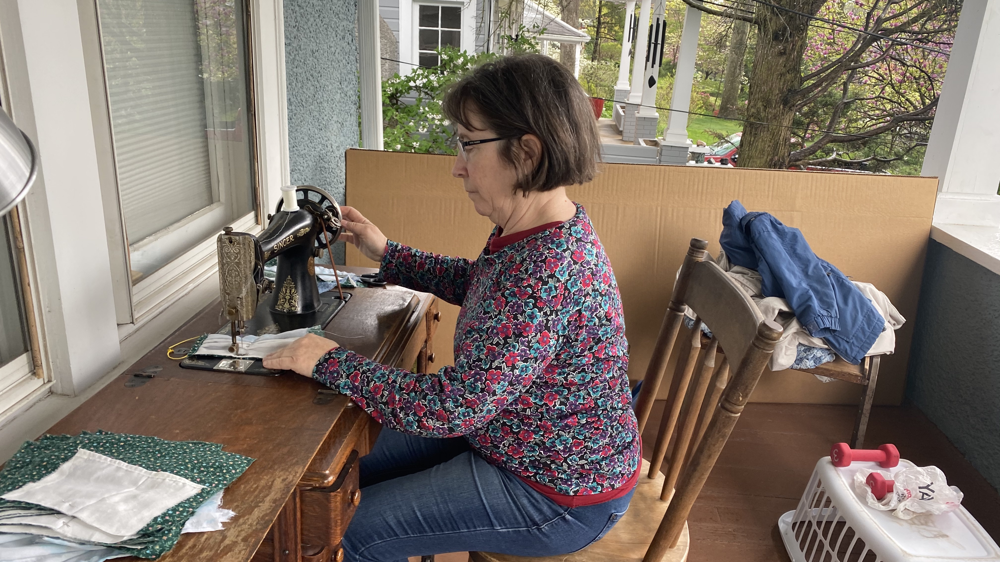
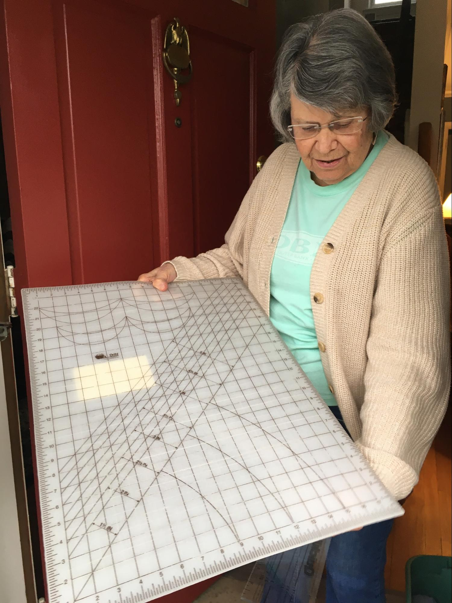
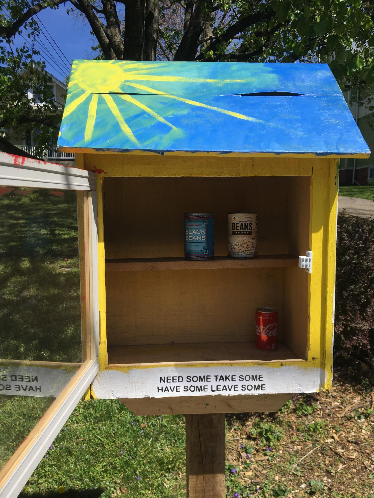
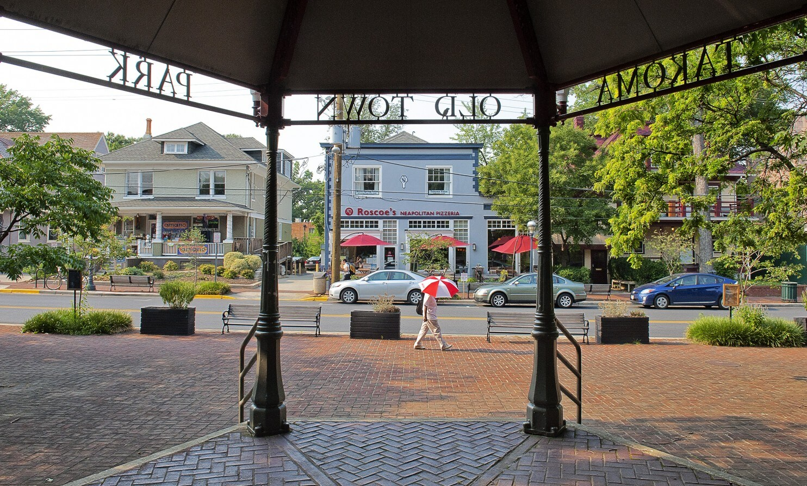

“Who Needs a Mask?”: How Social Connection Saves Lives
Sadie Cheston-Harris
An Amish-made treadle sewing machine sits on Peggy’s front porch, an old sheet draped over it when it’s not in use. At the foot of her steps lies an old cooler serving as a makeshift collection bin, marked “Mask Materials (Drop Off Here)”. Due to the shortage of masks during the COVID-19 pandemic, Peggy has asked people who would like a mask to drop off materials that she will then assemble. She plans on sewing ten masks today, all of them to give away. All she asks in return is for people to “pay it forward.”

The makeshift collection bin sits on Peggy’s steps, ready to receive fabric for her to sew into masks.
Almost sixteen thousand people died during the Japanese earthquake and tsunami of 2011, and the difference between whether one lived or died was not what you’d expect. When researchers tried to figure out why some people survived and some didn’t, they considered a range of factors including tsunami height, proximity to the ocean, seawall height, and socioeconomic status. They were surprised to find that areas with greater levels of social interaction and kinship had lower death rates than similar areas lacking in a sense of community. “In many cases only 40 minutes separated the earthquake and the arrival of the tsunami,” explains Daniel Aldrich, author of ‘Recovering from disasters: Social networks matter more than bottled water and batteries.’ “During that time, residents literally picked up and carried many elderly people out of vulnerable, low-lying areas. In high-trust neighborhoods, people knocked on doors of those who needed help and escorted them out of harm’s way.”
Human connection saves lives. This may seem counterintuitive given the current call for social distancing amid the COVID-19 pandemic. However, human connection goes beyond just human touch and physical proximity, and can have a plethora of both physical and mental health benefits. A New York Times article titled ‘Social Interaction is Critical for Mental and Physical Health’ describes a correlation between individuals lacking in social connection and increased levels of stress. An example is found in ‘The Health Benefits of Strong Relationships’ in the Harvard Women’s Health Watch. The article explains that social connections “help relieve harmful levels of stress, which can adversely affect coronary arteries, gut function, insulin regulation, and the immune system. Another line of research suggests that caring behaviors trigger the release of stress-reducing hormones.”
During this time of the coronavirus pandemic, Peggy has been making masks to give away, and she has volunteered to go grocery shopping for my family and many others. By shopping for multiple households, Peggy reduces the number of people who are in public spaces, potentially preventing the spread of the virus. However, her impact goes beyond the prevention of transmission. Peggy is doing the COVID-19 equivalent of knocking on doors and helping neighbors evacuate before the tsunami. This type of generosity is not unusual for my neighborhood or for most of the communities I am a part of. I have seen people act similarly within my church community, in my dorm, and on teams. However, given the current shelter in place order, my world is now physically limited to my immediate community. That’s why I am here on Peggy’s porch, having her talk into a tape recorder from six feet away. I've known Peggy my whole life as a caring next-door neighbor, but today I’m here to interview her because I've gotten interested in how social connections keep people alive during disasters.

Peggy sews a mask on her porch with her Amish-made treadle machine.
Peggy, why and when did you first decide to make masks for other neighbors?
I decided about two weeks ago that we needed masks for our family. I saw people walking by and [only] some had masks. Some people said ‘Oh I need to figure something out,’ and I said ‘Well I can make some for you.’ And then as conversations continued I realized I should just put ‘Who needs a mask?’ out on the listserve. That’s how it got to be a bigger thing. Susanne Lowen, who is a member of the Food Co-op said ‘Guess what, people are working up there with no masks.’ And she’s put an order in and they’re not going to come until May. So five of us are making these as fast as we can, giving them to Susanne, and she’s taking them to the Co-op.
I have a friend who is a quilter, and she told me, ‘Why don’t you drop the fabric off and I’ll cut it for you?’ I asked her to cut some out so we’ll have about 20 large ones because I’m thinking some people at the CO-OP, some of them have big beards, and some of them have large hair so I figured they’d want a bigger mask. And then I’ll make extra long ties so they don’t have to ruin their hair to use it.
Peggy thinks of not just the masks that she is making, but of the individual people who are going to wear them. She is white and has straight hair, unlike many of the workers at the Co-op. As someone who identifies as biracial and has textured hair, I don’t take it for granted that she is able to recognize that she does not define the norm. The way she intentionally assembles the masks to ensure that they can be comfortably worn by their recipients shows the depth of her care. This attention to detail is not unusual for Peggy.

Peggy’s friend, Nancy, shows the quilting board she will be using to cut the fabric for the masks.
At some point, Peggy pauses and points to a plastic bag hanging from the rail of her porch. The bag contains two bags of flour for me to use. She had remembered my mom telling her that I was enjoying baking while in quarantine. Knowing that we had run out of flour and that it wasn’t available at the store, she decided to gift me some of her own. When we resume recording a few minutes later, Peggy discusses her decision to grocery shop for other families.
What have you done for others in the past few weeks?
Since I’m retired and I’m not having to learn how to work from home or be a teacher from home, I have the time. So I’ll just use your parents [as an example]: I know your mother is working really hard to keep up with her job and she wouldn’t have the time to do what I did yesterday. At Trader Joe’s you go, you get a ticket, it’s an hour wait. Your parents wouldn’t be able to take the time to do that. So I thought, well, I’m doing it anyway, so I’ve been shopping for about five to six households. I figure it’s safer if it’s one person going in. Yes, I might get exposed, but I’ve got my mask, I’ve got my gloves, I change my clothes as soon as I get home [and] I shower. I’m taking care of myself, but I’m helping out other people. It just makes sense. I’m only sixty three so I don’t feel elderly; I’m on the younger end but I’m retired and I have the time so it’s an easy thing to do. Just collect people’s lists. So I did it two weeks ago and I did it again this week. [With] one person going every two weeks, it seems like not that many germs are going to be spread.
When I think of the selflessness Peggy is showing by grocery shopping for neighbors, I recall the care she gave her late father. He lived with her and her husband Bruce for years when he became frail. Many a summer night was spent sitting on my family’s back porch a few yards from Peggy’s, listening to her patiently read out New York Times crossword puzzle clues to her dad, sometimes repeating herself over and over again until he could hear. Some nights, the nights that she and Bruce reserved for folk dancing, I would come over and keep her father company. Peggy specifically asked me to do it as she knew I was looking for ways to make a bit of money—I would have done it for free, so she in a way was also doing me a favor. I would chat with him and play him mini concerts on my violin. He had a passion for classical music. Peggy was very attentive to his preferences; she had a tray that she would set up with her father’s meals, and she would without fail place each food item in the position on the tray exactly where he liked it. He alternated between two TV stations: BBC, and a nature show (I remember watching an hour long special about birds and migration with him), and Peggy carefully marked the TV remote and pre-set the channels so her father could easily access them. Her father lived to be 102; Peggy had tended to him not only physically, but also to his soul.
What are characteristics of the groups that you are a part of that make you feel as if they are cohesive?
Growing up I lived in a tight knit community. It was a cooperative community called Tangey homesteads in Pennsylvania. We had everything. There was a shared road, there was a tractor committee, and people knew how to plow the road. Everybody would pitch in to mow the lawn or plow the ballfield so the kids could play.
I grew up in this community where everyone helped each other out. Back in those days very few women worked outside the home. They stayed at home so they helped each other out with things. If you had a project in your kitchen and you wanted people to help, several people would come and help you clean and the other two people would be watching the kids. There was a clothing exchange. We always had ice skating on the pond, so every year when kids outgrew their ice skates there would be an ice skate exchange. Summer program[s] where you [would] go to the local Y for camp, we had it right there. People taught lessons in diving and usually there was someone certified with the Red Cross to teach swimming lessons. It was a neat community to grow up in. I always thought, oh, I’d like to go back there and raise kids there. That didn’t happen because the guy I married had a DC job so this is where we lived. I [also] grew up in Quaker meetings. In the one I belong to here people are very helping of each other, helping out the greater community. It just is a wonderful place to be, here.

Sycamore Avenue has always been known as a close community. Just a few houses down the street from Peggy, the recently built Little Free Pantry stands beside two Little Free Libraries: one for adults, and one for children. Emily and Thom assembled and set up the new food pantry in their front yard; many, including Peggy, dub Emily the “Mayor of Sycamore” due to her major role in creating a cohesive street community over the years.
A sign on the Little Free Pantry reads “Need some, take some. Have some, leave some.”
At one point during my conversation with Peggy, our neighbor Roger begins using a leaf blower to clear debris from his stairs and walkway. He then takes the time to clear the sidewalk in front of the house next door to his. Sycamoreans often mow each other's curb strips, help shovel each other’s snow, and share tools and equipment. Currently, we are sharing food, along with games and sports equipment to help pass the time.
When did you move here, and what was the neighborhood like when you moved here?
We moved here and bought this house in 1986. We didn’t know anybody when we moved here, but people had said that the school district was good, and we thought, well, maybe we’ll have children but we didn’t really expect to stay long. But, when we moved here we found everybody knew everybody on this street which is kinda unusual for some neighborhoods. Every year there were parties and baby showers so everybody knew each other and has always been helping each other out for years. That really compelled us to stay. We never thought about moving after that. So that happens year in year out and it’s kinda nice to see.
At one point my parents decided that our house didn’t suit our needs anymore. With my sister and me now in the mix, they dreamed of spaces for sleep-overs and music practice, as well as mundane things like a coat closet. The logical step would have been to move, as my parents did not want to live through a renovation. However, there was no way they were moving away from Sycamore Avenue, so we ended up living in a construction site for months. As my mother put it, “the only way we will move is if we can take our neighbors with us.”
What is something nice that you’ve noticed happen over the course of the past few weeks?
I love the music, the concerts that Fred and Karen are giving [each night on their front porch across the street]. I’m waiting for you to pull out your violin. What I’d love to see is somebody bug Bruce because I’d love for him to have his bassoon, and you and Katherine try to play some distance concert.
What is the nicest thing you remember doing for another neighbor?
I suppose providing food for people when they’ve had surgery and can’t do it themselves. The easiest thing I’ve done is when I have extra plants that somebody wants, I dig them up and drop them off. I love doing that even now, [as] people are often wanting new plants for their yard. I guess I just think about what I have time to do and what I have the energy to do, and when I see a need then I jump in and try to help.
We have a gate in our backyard and we let the students when they were in school from Woodland (the street parallel) walk through so they don’t have to be on [Ethan Allen Avenue] which has gotten to be really busy. That’s something we established about two or three years ago. Denis and Kari and us have a pathway so a lot of students from Woodland cut through.
Sometimes when I glance out my window, I spot my back door neighbor, Sally, cutting through our yard to reach her house. On the days of trash pickup, she invariably brings our empty bins in from the street as she passes by the side of our house. The give and take never ends. My Dad borrows Peter’s lawnmower, and then helps Peter rebuild his fence. Menchu lends me a white blouse I need for a concert, and we give her a stick of butter when she has run out. However, the giving is not usually a direct exchange. A private college counselor gives free advice to neighborhood teens. When public schools closed a few weeks ago, teenagers in my neighborhood immediately contacted each other to organize a free babysitting cooperative. Over the years, during power outages, families with generators have offered to store perishable medications and provide outlets to charge electronics. I have grown up around this endless generosity my whole life, and have always viewed Peggy as a major contributor.

The gazebo in Old Town Takoma sits in the heart of the town’s business district, just a couple of blocks away from Sycamore. The gazebo is home to a communal outdoor piano and weekly open drum circles, among other community gatherings. (Bill O’Leary/Washington Post)
Do you think our street fits into the description of a cohesive community?
My brother lives in a very nice place. He has a house in a cul de sac with only about six or seven families. He goes out and walks the dog. He waves to people. But that’s it, there’s no interaccion, he doesn’t even really know their names. And the same with Bruce’s sister where she lives in Delaware out in the country. Whereas I could tell you almost everybody’s name, except maybe the new people, on this block. I mean, we just know each other. It’s just an unusual thing I think.
Growing up, I never knew there was another way to be. The adults around me knew me, and I knew them. When my parents go out for walks, a lot of the people they pass by ask, “How’s Sadie?” The social connection is always there, no matter whether we are hundreds of miles away, or six feet apart. We just know each other. It turns out that’s an unusual thing.